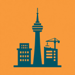

专注城市建造
离线版 · 专注清单之城市建筑建造
专注学习就是施工：一分钟一分钟，把各国各城市的著名建筑一座座盖起来
🏙️ 城市等级
启程小镇
🏛️ 已建成
0
/ 30
⏱️ 累计专注
0
小时
🏗️ 施工现场
还没有选工地
去下面的「世界地标图鉴」里，点一座建筑开工。
这一轮专注多久
25 分钟
这一轮学什么 / 做什么
完工 / 建成时播放提示音
开始专注施工 🏗️
25:00
正在施工
放弃这一轮（本次施工作废）
🚫 分心黑名单
施工期间的硬规则
深度专注
：施工专注期间打开下面任何网站，这一轮施工立刻倒塌作废（已累积的进度不清零）
黑名单网站
添加
常用：
安装时浏览器会提示这个插件能读取标签页网址——那只是为了在本机对照黑名单，代码里没有任何上传，网址不会离开你的浏览器。不在专注时，它什么都不拦。
🌆 我的城市
Lv.1 启程小镇
📊 城市数据
0
今日专注（分钟）
0
今日建成（座）
0
本周专注（分钟）
0
倒塌作废（轮）
🕘 施工记录
💾 我的数据
导出备份 JSON
导入备份
清空全部数据
离线版：城市、进度、黑名单和记录只保存在这个浏览器本地，不上传任何服务器。卸载插件或清理浏览器数据会清掉它们，重要记录请先导出备份。和「专注清单」「专注森林」是独立应用，数据不互通。
🗺️ 世界地标图鉴
21 个国家 · 30 座著名建筑，点一座开工；城市等级升高后解锁更宏伟的地标